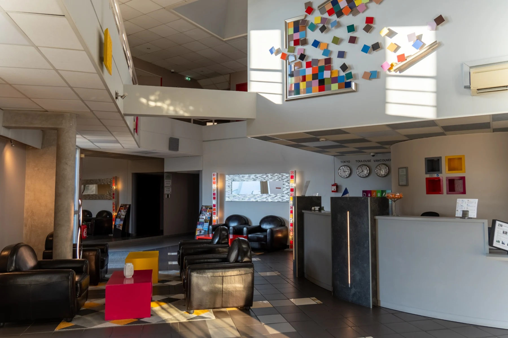
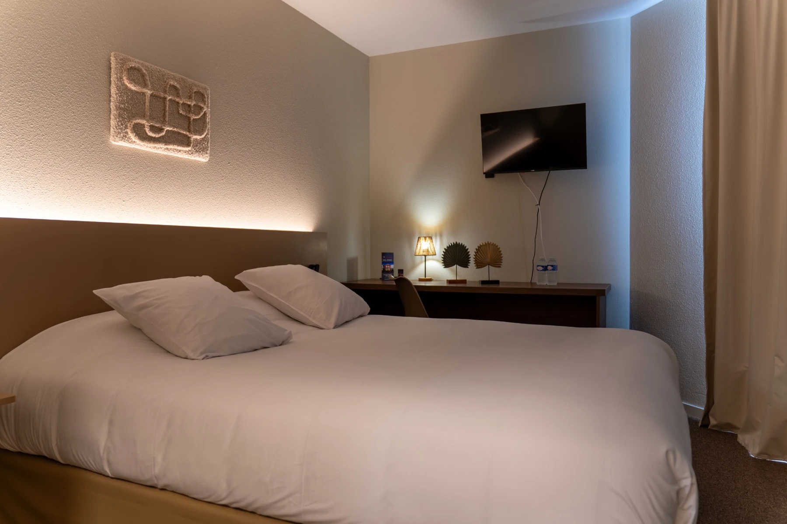
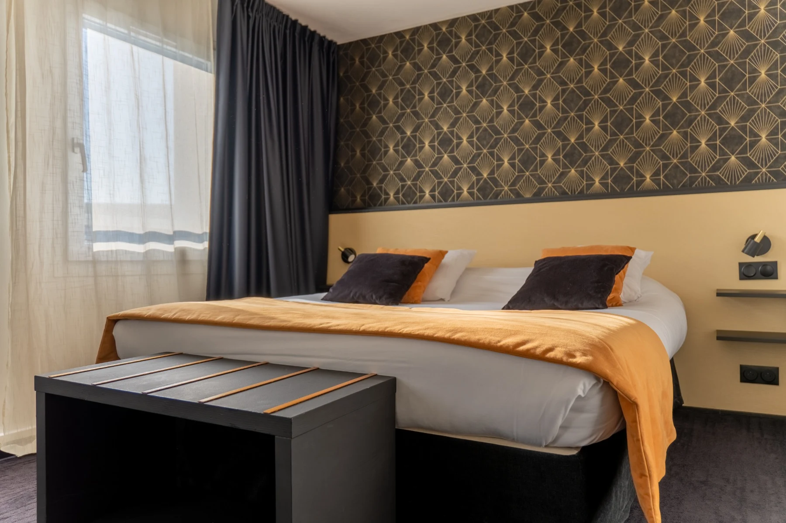
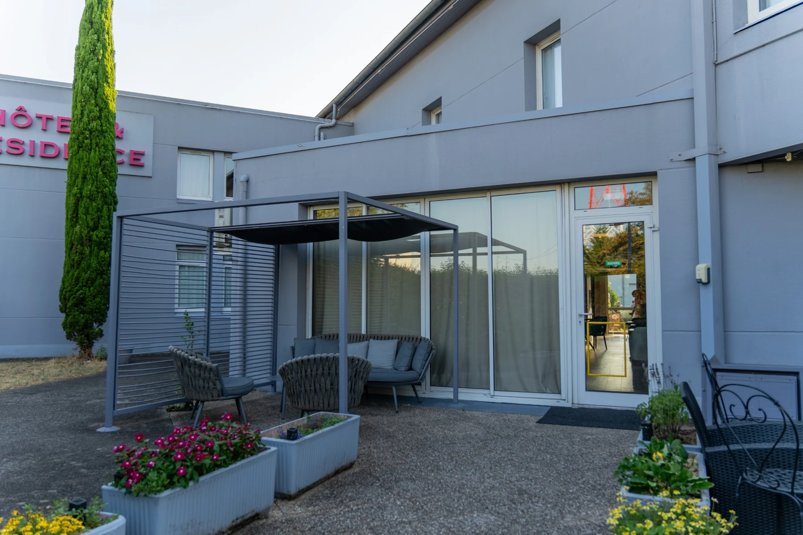
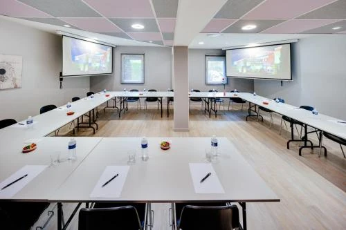
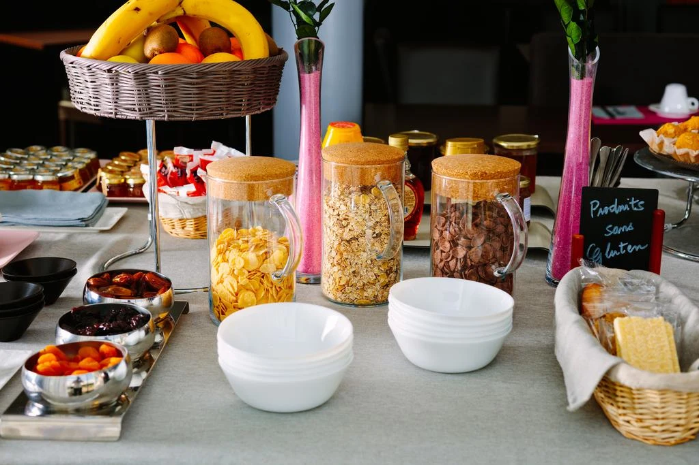
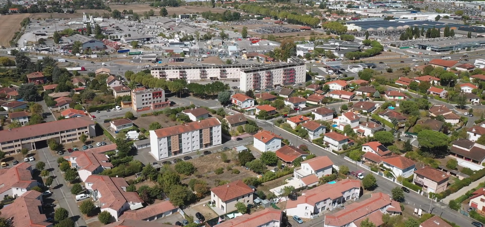

Une nuit, une semaine, plusieurs mois
Choisir son
propre tempo.
Deux formats, une même attention : de l’espace, du calme et ce qu’il faut pour se sentir immédiatement à l’aise.
Portet-sur-Garonne · Toulouse Sud
Hôtel & Résidence ★★★ · indépendant
OCTEL · 43°31' N
L’adresse
À quelques minutes de Toulouse
OCTEL accueille les séjours d’une nuit comme ceux de plusieurs semaines. Une maison indépendante, accessible, confortable et attentive au rythme de chacun.


Entre ville et Garonne
Portet-sur-Garonne · Haute-Garonne
Séjourner
Faites défilerGlissez→
Une nuit, une semaine, plusieurs mois
Deux formats, une même attention : de l’espace, du calme et ce qu’il faut pour se sentir immédiatement à l’aise.

01King 180×200Chambre · 25 m²
Lit King size, espace bureau, climatisation, coffre-fort, plateau de courtoisie et télévision HD.

02Séjour autonomeStudio · 25 m²
Un espace autonome avec cuisine équipée : plaques, micro-ondes, réfrigérateur, grille-pain et vaisselle.

03À l’air libreEntre deux temps
Un espace extérieur pour faire une pause, travailler autrement ou simplement ralentir.
Explorer ↓
04Jusqu’à 15 personnesRéunions · 50 m²
Une salle en rez-de-chaussée pour accueillir jusqu’à 15 personnes, avec plusieurs formules de location.
Organiser ↓Les attentions
Disponible quand vous l’êtes
Une équipe présente jour et nuit.
↗Gratuit et fermé.
↗Inclus pendant votre séjour.
↗Disponible à toute heure.
↗Sur demande et selon conditions.
↗Le matin

Petit-déjeuner
Buffet servi dès 5h30.
Séminaires
Réunions & journées d’étude
Une salle de réunion en rez-de-chaussée pensée pour les temps de travail en petit comité.
La destination
Portet-sur-Garonne
À proximité de l’A64 et du sud toulousain, OCTEL devient un point d’appui entre rendez-vous, étape et séjour.


« Personnel toujours très agréable et prêt à rendre service. Cet hôtel est notre point de chute quand nous sommes dans la région. »
— Avis client publié sur le site OCTEL
Une nuit ou davantage